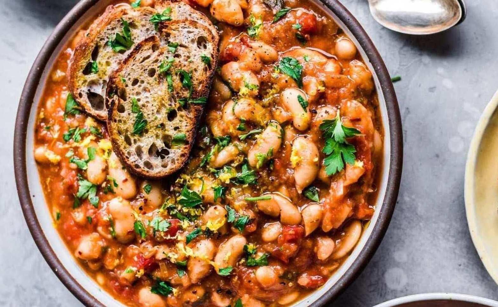

Hearty Bean Stew

Description
A Canadian prairie winter can be bone-chilling. A bowl of this meatless stew over couscous, rice or with cornbread is all it takes to warm us up. It’s hearty, tasty and—unbeknownst to your family—healthy, too! Perfect served over rice.
Nutrition Facts
306 calories; protein 14g; carbohydrates 55g; fat 4g; cholesterol 1mg; sodium 712mg.
Ingredients
- 1-1/2 cups chopped onions
- 1 tablespoon canola oil
- 4 garlic cloves, minced
- 1 can (28 ounces) diced tomatoes, drained
- 3 large carrots, chopped
- 3 celery ribs, chopped
- 1¼ cups beef broth
- 1 tablespoon Worcestershire sauce
- 1 can (16 ounces) kidney beans, rinsed and drained
- 1 can (15 ounces) garbanzo beans or chickpeas, rinsed and drained
- 1 can (15 ounces) black beans, rinsed and drained
- 1 can (6 ounces) tomato paste
- 1 tablespoon chili powder
- ¼ teaspoon pepper
Steps
-
In a large saucepan, saute onions in oil until tender; add the garlic, cook 1 minute longer. Add the tomatoes, carrots, celery, broth and Worcestershire sauce. Bring to a boil. Reduce heat; cover and simmer for 15 minutes.
-
Stir in the beans, tomato paste, chilli powder and pepper. Cover and simmer for 30 minutes, stirring occasionally.